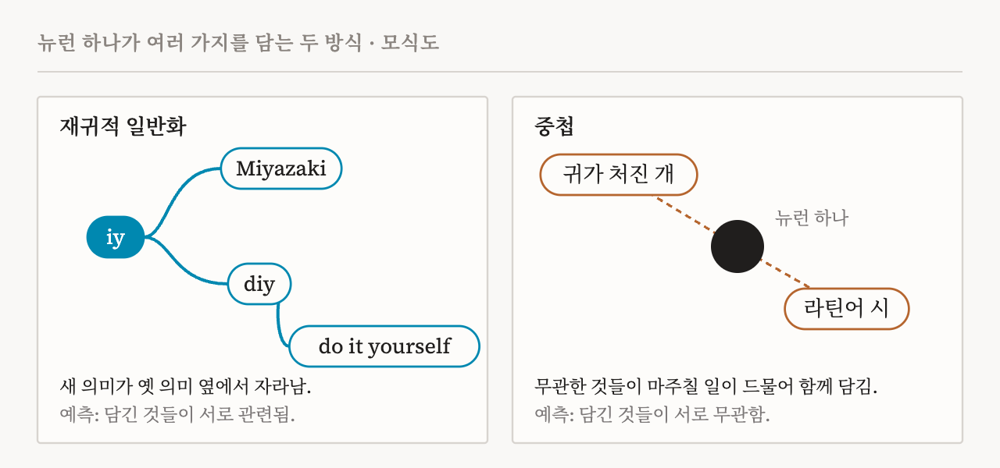
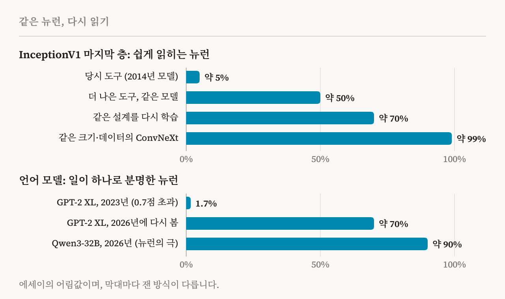
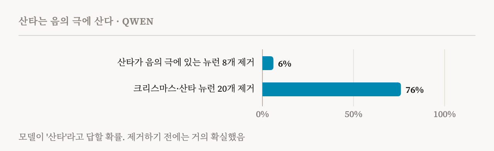
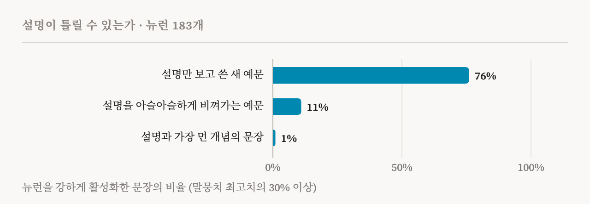

거의 10년 동안, 신경망 속을 들여다보는 일이 왜 어려운지를 상징한 것은 뉴런 하나였습니다. 2014년에 나온 이미지 모델 InceptionV1의 4e층 55번 뉴런은 고양이 얼굴에도, 자동차 앞모습에도 반응했습니다. 이 분야에서 가장 널리 읽힌 논문 몇 편이 이 뉴런을 근거로 들었습니다. 뉴런 하나가 서로 무관한 것들을 섞어 담을 수 있으니, 뉴런은 연구 단위로 알맞지 않을 수 있다는 것입니다. Nick Cammarata는 그 논문 가운데 한 편의 공저자입니다. 최근 그는 수백 번 본 고양이와 자동차 사진 묶음을 다시 열고, 처음으로 이 사진들의 공통점이 무엇일지 생각해 보았습니다. 답은 몇 초 만에 나왔습니다. V 모양입니다. 고양이와 여우는 뾰족한 얼굴에 이 모양이 있고, 비슷한 각도에서 찍힌 자동차 앞모습에도 있습니다. 이 뉴런과 가장 강하게 연결된 것 중에는 V 모양의 불꽃과 소방정이 뿜는 V 모양의 물줄기도 있습니다. 이 뉴런이 가장 강하게 음으로 반응하는 모양은 O입니다. V가 뾰족한 자리가 O에서는 둥급니다.
이 장면으로 시작하는 에세이가 「Neural Networks Are Already Clean」입니다. Cammarata가 2026년 10월 15일 Goodfire에서 발표했고, 10월 30일에 수정했습니다. 읽는 데 65분이 걸린다고 스스로 밝힐 만큼 길고 격식 없는 에세이이며, 아직 작업 가설이라고 분명히 말합니다. 주장은 대담합니다. 이 분야가 초기에 연구한 모델들에서 보인 다의성, 곧 한 뉴런이 여러 가지 일을 하는 듯한 현상은 중첩 때문이 아니었다는 것입니다. 원인은 대부분 고칠 수 있는 평범한 문제 몇 가지였고, 이제는 매개변수가 수조 개인 모델까지 대부분의 뉴런을 이해할 수 있다고 합니다.
제가 이 에세이를 꼼꼼히 읽은 것은, AI 복지에 관한 이 사이트의 질문이 절반쯤 해석 가능성 연구에 기대고 있기 때문입니다. 모델 안에서 무슨 일이 일어나는지, 예를 들어 괴로움 같은 것을 표상하는지 알고 싶다면, 먼저 모델의 부품을 읽을 수 있기는 한지부터 알아야 합니다.
한 가지 혼란, 두 가지 설명
다의적 뉴런은 서로 무관한 여러 일을 하는 것처럼 보이거나, 아무도 설명하지 못하는 뉴런을 말합니다. 「Zoom In」(2020) 이후 가장 유력한 설명은 중첩(superposition)이었고, Cammarata도 이 설명을 처음 내놓은 사람 중 하나입니다. 그가 반박하려는 중첩은 일종의 학습 원리입니다. 뉴런이 모자라면 신경망은 비슷한 것끼리 묶기를 멈추고, 서로 무관한 것들을 한 뉴런에 접어 넣습니다. 함께 나타나는 일이 드문 것들은 서로 간섭할 일도 드물기 때문입니다. 신경망이 정말 이렇게 배운다면, 한 뉴런이 무엇을 묶었는지는 거의 아무것도 알려 주지 않습니다. 그래서 먼저 매듭을 풀어야 합니다. 보통은 희소 오토인코더 같은 두 번째 모델을 학습시켜 원래 신경망을 펼친 형태로 근사한 뒤, 원래 신경망 대신 그 모델을 연구합니다.
에세이는 두 번째 설명을 내놓습니다. 재귀적 일반화라는 것입니다. 한 패턴에서 출발한 뉴런은 나뭇가지가 잔가지를 치듯 관련된 방향으로 뻗어 나갑니다. 한 언어 모델 뉴런은 처음에 "Miyazaki"에 들어 있는 것 같은 "iy"에 반응했습니다. 그러다 "diy"에도 반응하게 되었고, 거기서 다시 "do it yourself"로 뻗었습니다. 이 마지막 표현에는 "iy"가 전혀 들어 있지 않습니다. 다 자란 모습만 보면 이 뉴런은 뒤섞인 것처럼 보입니다. 하지만 자라는 과정을 보면 한 걸음 한 걸음이 작고 따라가기 쉽습니다(도판 1).

두 설명은 정반대를 예측합니다. 일반화는 비슷한 것을 한데 모으므로, 뉴런이 주로 하는 일 주변에 있는 것들은 그 일과 관련이 있어야 합니다. 중첩은 무관한 것을 한데 모으므로, 그것들은 서로 멀리 떨어져 있어야 합니다. 그래서 이 질문은 시험해 볼 수 있습니다. 학습하는 동안 뉴런이 자라는 모습을 지켜보고 어느 쪽이 일어나는지 보면 됩니다. 저자가 지켜본 뉴런에서는 하나같이 일반화가 일어났습니다.
그는 자신이 반박하려는 중첩을, 차원보다 특징이 많다는 더 약한 의미의 중첩과도 구별합니다. 신경망은 뉴런을 조합하는 것만으로 뉴런 수보다 많은 개념을 표상할 수 있고, 완벽하게 깨끗한 신경망도 그렇게 합니다. 에세이는 이 점을 부정하지 않습니다. 다만 이런 의미의 중첩은 신경망을 직접 연구하는 데 걸림돌이 되지 않는다고 봅니다.
옛 증거를 다시 읽기
에세이는 먼저 이 분야를 설득했던 사례들로 돌아갑니다.
첫째는 고양이와 자동차 뉴런입니다. 저자는 10월 30일 수정에서, 이 뉴런을 고양이와 자동차 뉴런이 아니라 V 모양 뉴런이라고 불렀던 앞선 표현을 누그러뜨렸습니다. 연구자 Liv Gorton의 반론을 받아들인 것입니다. 이 뉴런은 실제로 앞 층의 고양이, 여우, 자동차 검출기를 끌어옵니다. 주장은 더 좁습니다. 그 입력들은 서로 무관해서 한데 담긴 것이 아니라, 같은 모양을 공유해서 묶였다는 것입니다.
둘째는 「Zoom In」에서 중첩을 처음 소개할 때 쓴 회로입니다. Cammarata가 2019년 Chris Olah와 함께 찾은 이 회로에서는 자동차 특징이 서로 무관한 개 뉴런 여러 개로 퍼져 들어가는 것처럼 보였습니다. 마치 개 뉴런들이 자동차를 숨겨 두는 곳인 것처럼 말입니다. 다시 보니 자동차와 개는 자세를 공유하고 있었습니다. InceptionV1에는 이런 자세 뉴런이 100개 넘게 있고, 뉴런마다 카메라 쪽으로 같은 방향을 향한 자동차와 개, 그 밖의 물체를 한데 묶습니다. 뉴런을 그려 보이는 도구인 특징 시각화도 오해를 낳았습니다. 깊은 층의 뉴런에 맞춰 이미지를 최적화하면 개 쪽으로 미끄러지기 쉬운데, 학습 데이터에 개가 많기 때문입니다. 신경망 안에서 개 뉴런들로부터 자동차를 다시 읽어 내는 곳은 없습니다.
셋째는 InceptionV1의 마지막 층입니다. 이 층에서는 해석할 수 있는 뉴런이 거의 없어 보였습니다. 에세이는 그 원인을 평범한 두 가지에서 찾습니다. 도구가 약했고, 설계에 잔차 연결과 정규화가 없었다는 것입니다. 잔차 연결과 정규화는 모두 깊은 층이 잘 배우도록 나중에 도입된 장치입니다. 에세이가 제시하는 수치를 보면 차이가 분명합니다(도판 2). 당시 도구로는 마지막 층 뉴런의 5% 정도만 쉽게 읽혔습니다. 같은 2014년 모델에 더 나은 도구를 쓰면 약 50%, 같은 설계를 요즘 방식의 정규화로 다시 학습시키면 약 70%입니다. 같은 크기에 같은 데이터로 학습한 ConvNeXt에서는 약 99%입니다.

두 실험은 중첩 가설을 더 직접 시험합니다. 첫 실험에서 저자는 InceptionV1에서 잘 알려진 한 층을 뉴런 480개에서 10개로 줄이고 처음부터 다시 학습시켰습니다. 공간이 모자라 신경망이 접어 넣기 시작했다면, 남은 뉴런들은 서로 겹친 혼합물이 되었어야 합니다. 실제로는 뉴런 하나가 더 넓은 범위를 맡게 되었을 뿐입니다. 곡선 검출기 열 개 대신 곡선과 고리를 함께 맡는 뉴런 하나가 생겼습니다. 줄인 층에 희소 오토인코더를 학습시켜도 사라진 곡선 검출기는 되살아나지 않았습니다. 두 번째 실험에서 그는 ConvNeXt 모델들의 층에 희소 오토인코더를 학습시키고, 뉴런에는 없는 구성 요소를 찾아보았습니다. 마지막 층에서 오토인코더 활동의 88%는 뉴런 하나를 거의 그대로 옮긴 것이었습니다. 어느 뉴런과도 맞지 않는 방향을 모두 지워도 정확도는 변하지 않았습니다.
다음으로 에세이가 살펴본 것은 드문 것들입니다. 드문 것은 다른 것과 부딪칠 일이 적고, 뉴런 하나를 따로 차지할 만큼 중요해 보이지 않을 수도 있기 때문입니다. 에세이의 이미지 모델에서 드문 클래스는 오히려 흔한 클래스보다 한곳에 모여 있는 경우가 많았습니다. ImageNet에는 개 패턴이 많이 필요하지만, 트리케라톱스 뉴런은 하나면 됩니다. 표상이 다른 이미지들과 가장 동떨어진 이미지들을 봐도, 평범한 뉴런이 잘못 읽은 경우였습니다. 벌새를 아이스크림으로, 넘어진 외바퀴 손수레 속의 남자를 잔디 깎는 기계로 본 식입니다. 저자는 매개변수 700만 개 규모의 ConvNeXt에 말도 안 되는 것을 가르쳐 보기도 했습니다. 우산 사진이 벌이라는 것입니다. 나머지 신경망과 끊긴 숨은 특징 하나가 그 사진만 외울 수도 있었습니다. 하지만 실제로는 학습 9단계 만에 모델의 1순위 답이 우산에서 메이폴로, 다시 벌로 바뀌었습니다. 우산 뉴런은 약해지고 원래 있던 벌 뉴런이 켜졌으며, 그 변화는 거의 다 마지막 3개 블록에서 일어났습니다. 신경망은 이미 있던 두 경로 사이에 샛길을 내는 방식으로 이 엉뚱한 답을 배웠습니다.
에세이가 뉴런을 읽는 법
이런 재해석 뒤에는 에세이가 많은 분량을 들여 설명하는, 뉴런을 보는 방식이 있습니다. 제게는 이 부분이 가장 쓸모 있었습니다.
첫째, 뉴런은 명사라기보다 관문에 가깝습니다. 저자는 예전에는 뉴런을 사람이 붙이는 이름 같은 명사로 생각했습니다. 하나는 자동차, 다른 하나는 곡선이라는 식입니다. 지금은 뉴런이 흐름을 조절하는 장치라고 봅니다. 중요한 것은 뉴런이 무엇을 통과시키고 무엇을 막는가입니다. 이미지 모델 앞쪽에서는 자동차와 개가 자세를 공유해 한 뉴런에 함께 있을 수 있습니다. 더 뒤에서는 자동차 검출기 앞에 놓인 뉴런이 자동차에는 양으로, 개에는 음으로 반응하고, 개는 개를 다루는 영역으로 넘어갑니다. 저자의 가장 큰 ConvNeXt에서 스포츠카 한 대를 18개 블록 가운데 마지막 5개에 걸쳐 따라가 보면, 처음에는 탁자나 수납장 같은 다른 직사각형 물건과 한데 묶이고 뱀이나 개와는 갈립니다. 마지막 블록에서 갈리는 것은 컨버터블과 스테이션왜건입니다.
둘째, 뉴런의 음의 극은 양의 극만큼 중요합니다. 다음 층으로 넘어가기 전에 음의 값이 잘려 나가는 신경망에서도 그렇습니다. 뉴런은 입력들이 던진 표를 더하는데, 어떤 표는 양의 극을, 어떤 표는 음의 극을 지지하고, 학습은 두 쪽을 모두 다듬습니다. 음의 극은 회로의 그 지점에서 어떤 구별이 중요한지 알려 줍니다. 큰 ConvNeXt의 마지막 층에서 택시 뉴런은 구급차에, 브로콜리 뉴런은 콜리플라워에, 저어새 뉴런은 홍학에 음으로 반응합니다. 그래서 음의 극은 묶음이 진짜인지 빠르게 확인하는 방법이 됩니다. V 뉴런의 음의 극은 O입니다.
언어 모델에서는 이 점이 더 분명합니다(도판 3). 에세이에 실린 Qwen의 귀속 그래프 가운데 답이 산타인 것이 있습니다. 양의 극만 보는 일반적인 자동 라벨은 이 그래프의 핵심 뉴런 몇 개를 수도에 관한 뉴런으로 설명합니다. 산타는 이 뉴런들의 음의 극에 있습니다. 산타가 음의 극에 있는 뉴런 8개를 제거하면, 모델이 산타라고 답할 확률은 거의 확실한 수준에서 6%로 떨어지고, 모델은 산타 대신 반려동물을 범인으로 꼽습니다. 반면 라벨에 실제로 크리스마스나 산타가 들어간 뉴런 20개를 제거해도, 확률은 76%로 떨어질 뿐입니다.

셋째, 뉴런은 명사보다 동사로 설명하는 편이 나을 때가 많습니다. 사람도 자동 해석 도구도 뉴런을 고양이와 자동차처럼 명사 목록의 검출기로 설명하는 경향이 있습니다. 하지만 뉴런이 실제로 하는 일은 V와 O처럼 뒤쪽 뉴런들이 쓸 구별을 만드는 것일 때가 많습니다. 저자의 요령은 명사를 전혀 쓸 수 없다면 이 뉴런을 어떻게 설명할지 스스로 묻는 것입니다. 그는 패턴 하나를 명사 목록으로 설명하는 습관이, 중간 층에서 다의성을 잘못 판정하는 가장 큰 원인일 것이라고 봅니다.
넷째는 약한 활성, 곧 뉴런의 최고치보다 한참 낮은 희미한 반응입니다. 숨은 특징이 있다면 가장 자주 의심받는 곳입니다. 에세이의 답은 약한 활성이 의미의 바깥쪽으로 퍼져 나간다는 것입니다. CLIP의 트럼프 뉴런은 트럼프 사진에 가장 강하게 반응하고, 그다음 그와 관련된 그림과 사람들, 그다음 Fox News 스튜디오에 반응합니다. 언어 모델의 뉴런은 비유하는 장치처럼 일합니다. 타이타닉 뉴런은 조금이라도 타이타닉을 닮은 항해 이야기에 희미하게 반응합니다. 신경망의 약한 활성은 거의 모두 지워도 손실이 적고, 바뀌는 것은 대개 신경망이 이미 헷갈려 하던 두 답 사이의 아슬아슬한 승부입니다. 에세이는 백분위로 생각하는 것도 경계합니다. 상위 1%는 드물게 들리지만, 토큰 100개 가운데 하나는 대략 4분의 1쪽마다 한 번 나옵니다. 드문 감정을 추적하는 뉴런이 그만큼 자주 켜진다면 너무 잦습니다.
언어 모델
언어 모델에 관한 증거는 더 새롭지만 아직 덜 다듬어져 있습니다. 에세이도 자세한 내용은 앞으로 나올 기술 논문에 담길 것이라고 밝힙니다. 비교할 기준은 2023년의 결과입니다. Anthropic의 「Towards Monosemanticity」에서는 작은 1층 모델의 뉴런이 받은 점수의 중앙값이 0점이었습니다. 평가자가 가설조차 세우지 못했다는 뜻입니다. Cammarata가 시작한 OpenAI의 자동 해석 프로젝트에서는 GPT-2 XL의 뉴런 307,200개 가운데 5,203개, 곧 1.7%만이 0.7점을 넘는 설명을 얻었습니다.
에세이가 전하는 지금의 모습은 다릅니다. Qwen3-32B를 예비 점검한 결과, 뉴런의 극(뉴런마다 양의 극과 음의 극이 있습니다) 가운데 약 90%는 주된 일이 하나이고, 작은 관련 가지가 붙은 경우가 많습니다. 약 7%는 서로 관련된 일 두 가지를 하고, 아직 이해하지 못한 것은 2–4%뿐입니다. 매개변수가 수조 개인 모델에서도 비슷한 결과를 얻었다고 하지만, 이것도 예비 결과입니다. GPT-2 XL을 다시 살펴보니, 뉴런의 약 70%가 대체로 한 가지 일을 하고 있었습니다.
에세이는 이 차이를 평범한 실패들로 설명합니다. 2023년의 설명 모델은 가설을 세우고 시험하는 일을 되풀이하지 못했습니다. 채점 방식은 맞는 설명보다 활성값을 잘 흉내 내는 설명에 높은 점수를 주었습니다. 그리고 언어 뉴런에서 어떤 패턴을 기대해야 하는지 아무도 몰랐습니다. 예를 들어 많은 뉴런은 의미를 실은 단어가 아니라 쉼표에서 활성화됩니다. 모델이 그때까지의 맥락을 요약해 두는 자리입니다. 연구진이 찾은 뉴런 가운데 감정이나 사회적 신호를 추적하는 뉴런이 가장 흔한 축에 든다는 점도 눈에 띕니다.
에세이는 잘 알려진 분석을 뉴런만으로 다시 해 보기도 합니다. Anthropic의 「On the Biology of a Large Language Model」(2025)은 Claude 3.5 Haiku가 전자간증이라는 진단에 이르는 과정을, 학습된 대체 모델의 특징으로 추적했습니다. 에세이는 같은 회로를 Qwen3-32B 자신의 뉴런에서 찾습니다. 대체 모델을 쓰지 않으므로 재구성 오차도 없습니다. 진단은 뉴런 4개로 된 중심점을 거칩니다. 이 뉴런들을 제거하면 모델은 대신 가려움에 관해 묻습니다. 가려움은 임신 중에 생기는 다른 간 질환의 대표적인 증상이어서, 모델이 다음 후보로 넘어간 것처럼 보입니다. 에세이는 매개변수가 수조 개인 모델 Kimi K3의 귀속 그래프도 뉴런만으로 만들어 보여 줍니다. 저자들이 아는 한, 이 규모의 모델로는 처음 공개된 귀속 그래프입니다. 주운 지갑을 어떻게 해야 하느냐는 질문에, 모델은 지갑과 현금과 주인의 신분증을 분실물과 정직에 연결하고, 돌려주어야 한다고 답합니다.
에세이에서 가장 좋은 예는, 제대로 살펴보기 전까지 엉터리 같았던 뉴런들입니다. 한 최신 대형 모델의 뉴런은 주로 "pr"에 반응했지만, Base64로 인코딩된 URL 몇 개와 벵골어에도 반응했습니다. URL을 해독해 보니 "pr"이 들어간 단어였고, 벵골어를 로마자로 옮겨 보니 역시 "pr"이었습니다. 일반적인 자동 라벨이 다의적인 쉼표 뉴런이라고 부른 다른 뉴런은 콜로라도를 추적하고 있었습니다. 콜로라도의 전화번호와 속어에 반응했고, 다른 콜로라도 뉴런들과 연결되어 있었습니다. 쉼표에서 켜진 것은 쉼표가 맥락을 요약해 두는 자리이기 때문이었습니다. 이 뉴런을 조작해 키우자 모델은 하이킹을 가고 싶어 했습니다. 무관한 주제의 혼합처럼 보였던 뉴런들이, 데이터에 두 문단보다 긴 맥락을 넣자 긴 맥락을 다루는 뉴런으로 밝혀진 일도 있었습니다.
에세이는 유명한 언어 뉴런도 다시 읽습니다. 「Towards Monosemanticity」는 1층 모델의 한 뉴런으로 논문을 시작합니다. 학술 인용, 영어 대화, HTTP 요청, 한국어 텍스트처럼 서로 무관해 보이는 곳에서 두루 활성화되는 뉴런입니다. 에세이는 이것이 '마침표를 말하지 말라' 뉴런일 수 있다고 봅니다. 언어 모델 곳곳에서 보이는 패턴입니다. 인용, 대화, 요청의 예는 거의 모두 마침표 위나 그 근처에서 활성화되고, 이 뉴런이 가장 강하게 억제하는 출력 토큰 10개 가운데 8개가 마침표로 시작합니다. 한국어 예는 모두 아직 다 쓰이지 않은 음절의 중간에서 활성화되는데, 마침표가 오면 안 되는 자리로 볼 만합니다. 모델이 공개되지 않아 더 시험할 수는 없습니다. 그래도 문장 부호에 관한 작은 압력 두 가지라는 설명은 무관한 일 네 가지라는 설명보다 훨씬 구체적입니다.
설계에 관한 발견 두 가지가 눈에 띕니다. 하나는 결함입니다. 요즘 뉴런에는 게이트와 값이 있는데, 둘 다 음수이면 곱이 양수가 되어 뉴런의 음의 극처럼 보이는 메아리가 생깁니다. 뉴런의 약 4%에서는 이 메아리가 가장 강한 활성 목록의 맨 위를 차지해 뉴런을 다의적으로 보이게 만듭니다. 에세이는 모델 설계자들에게 이 문제를 고쳐 달라고 요청합니다. 다른 하나는 전문가 혼합 모델에 관한 것입니다. 이런 모델에서는 작은 라우터가 각 토큰을 소수의 전문가에게만 보냅니다. 에세이는 전문가들이 기존 보고보다 훨씬 전문화되어 있다고 보고, 이 구조가 중첩을 막는 쪽으로 작동한다고 주장합니다. 무관한 것 만 가지를 접어 담은 전문가가 있다면, 작은 선형 층 하나에 불과한 라우터가 그 만 가지를 모두 알아봐야 하기 때문입니다. Qwen3.6에는 전문가가 10,240개 있고, 그중 하나는 롤플레잉 보드게임의 보스만 전담합니다.
에세이에는 제가 인상 깊게 본 시험도 있습니다. 블라인드 최대치라는 것입니다. 한 에이전트가 뉴런을 조사해 짧은 설명을 씁니다. 다른 에이전트는 그 설명만 보고 뉴런을 최대한 강하게 활성화할 문장을 씁니다. 결과는 대개 단순하고 읽기 쉬운 문장인데, 실제 텍스트 100억 토큰에서 찾은 어떤 예보다도 뉴런을 강하게 활성화할 수 있습니다.
왜 중첩이 옳아 보였는가
이 분야가 이것을 알아보기까지 왜 이렇게 오래 걸렸을까요? 에세이는 그 이유를 일부는 도구에서, 일부는 생각의 습관에서 찾습니다.
에세이에 따르면, 뉴런이 다의적으로 보인다는 말은 뉴런보다 관찰자에 관한 말일 때가 많습니다. 아직 좋은 설명이 없다는 뜻입니다. 에세이는 가능한 원인 다섯 가지를 듭니다. 나쁜 도구, 그 도구로 만든 나쁜 설명, 설계나 데이터 때문에 생긴 나쁜 학습, 재귀적 일반화, 그리고 중첩입니다. 이 가운데 새로운 학습 원리는 마지막 하나뿐이고, 시험하기도 가장 어렵습니다. 증상이 무언가가 이해되지 않는다는 것 하나뿐이기 때문입니다.
저자는 자신의 생각이 바뀌어 온 과정을 솔직하게 적습니다. 그는 여러 해 동안 중첩을 굳게 믿었습니다. 언어 모델 뉴런을 연구하기 시작한 것도 중첩 때문이 아니라 AI 에이전트에게 연구 감각이 있는지 보기 위해서였고, 에이전트들이 엉킨 조각들에 부딪힐 것이라고 예상했습니다. 그런 조각은 끝내 나오지 않았습니다. 그래도 믿음은 무너지지 않고 자리를 옮겼습니다. 강한 활성이 깨끗하게 나오면 중첩은 약한 활성으로, 뉴런의 조합으로, 아직 보지 않은 뉴런으로 옮겨 갔습니다. 그는 이제 중첩이 기본 가설이 아니라 마지막 가설이었어야 한다고 생각합니다. Anthropic의 「Softmax Linear Units」도 2022년에 비슷한 말을 했습니다. 중첩은 직관적으로 그럴듯해서 기본 가설처럼 다뤄지지만, 근거는 거의 없다는 것입니다.
그는 두 가지 실수의 무게가 같지 않다는 점도 짚습니다. 신경망이 깨끗하다고 가정했는데 틀렸다면, 지저분한 뉴런은 단서가 됩니다. 조사하다 보면 설명이 나아집니다. 반대로 신경망이 접혀 있다고 가정했는데 틀렸다면, 지저분한 뉴런에서 탐구가 끝납니다. 더 들여다보지 않기 때문입니다. 그는 여러 해 동안 두 번째 가정을 했고, 그 가정은 생각을 바꿀 수 있었던 증거를 설명으로 덮어 버렸습니다.
마지막으로 에세이는 이 분야가 전혀 다른 목적으로 받아들인 변화의 덕을 보았을 수 있다고 봅니다. 2023년에 저자는 작고 단순화한 모델이 가장 좋은 출발점이라고 생각했습니다. 지금은 반대로 생각합니다. InceptionV1에 없던 잔차 스트림 같은 요즘 설계의 요소들은 신경망이 잘 배우도록 돕기 위해 있고, 그것을 덜어 내면 뉴런도 제대로 배우지 못합니다. 또 큰 모델은 패턴을 알아보기 쉬운, 한 가지에 집중하는 뉴런을 배웁니다. 에세이의 말대로라면, 이 분야는 어차피 원하던 설계와 규모를 받아들이면서 자기도 모르게 깨끗한 뉴런 쪽으로 다가가고 있었는지도 모릅니다.
제가 확인한 것
에세이 페이지에는 무작위로 고른 '뉴런 논문'(neuron paper) 1,000편이 공개되어 있습니다. 논문이라고 부르지만 실제로는 뉴런 하나를 자세히 조사한 보고서로, Qwen3-32B에서 500편, 전문가 혼합 모델 Qwen3.6-35B-A3B의 전문가 뉴런에서 500편입니다. 보고서마다 그 뉴런이 얼마나 깨끗한지를 1점에서 10점으로 매긴 평가자의 점수와 한 줄짜리 이유가 붙어 있습니다. 이 점수는 90%라는 수치의 근거와 같은 척도가 아니어서, 그 수치를 확인해 주지는 못합니다. 그래도 점수 분포는 세어 볼 수 있습니다(도판 4).
1,000개 가운데 898개가 5점 이상이었습니다(Qwen3-32B 454개, 전문가 혼합 모델 444개). 5점부터는 이유에 대개 중심 개념 하나가 적혀 있고, 따라갈 수 있는 가지나 설명되지 않은 나머지가 붙은 경우가 많습니다. 4점 이하인 102개의 이유에는 서로 무관한 반응이나 공통점 없는 혼합이 더 자주 나옵니다. 1점을 받은 6개는 모두 전문가 혼합 모델의 뉴런이고, 대부분 사실상 켜지지 않는 뉴런입니다. 8점 이상은 300개뿐입니다. 공개된 표본은 대부분의 뉴런이 한 가지 일을 하고 거기에 가지가 붙는다는 에세이의 설명과 맞습니다. 동시에 그 설명이 가지를 어떻게 세느냐에 상당 부분 달려 있다는 것도 보여 줍니다.
주된 일과 가지의 경계를 어디에 긋느냐가 판단의 문제라는 것은, 뉴런 하나만 봐도 알 수 있습니다. 에세이는 가장 강한 활성에 IDL과 Cesium 코드가 섞인 행성 지질학 뉴런을 소개하고, 코드를 가지로 셉니다. 이 뉴런의 보고서는 그만큼 확신하지 않습니다. 평가자는 5점을 주었고, 가장 강한 활성의 5분의 1을 차지하는 코드 쪽 활성이 지질학과 끝내 연결되지 않는다고 적었습니다. 한편 같은 보고서는 이 뉴런을 제거하면 모델의 출력 가운데 지질학 쪽만 바뀐다고 전합니다. 가지는 덜 중요하다는 에세이의 주장과 맞는 결과입니다. 코드가 가지인지, 설명되지 않은 별개의 반응인지는 판단의 문제입니다. 에세이도 각주에서 자신의 백분율이 바로 이런 판단에 달려 있다고 밝힙니다.
근거는 얼마나 단단한가
에세이는 반대쪽 위험도 의식하고 있습니다. 모든 뉴런에 그럴듯한 이야기가 있다고 가정하는 것도 빈틈을 메우는 설명이 될 수 있습니다. 에세이의 답은 중첩이 아닌 다른 원인들은 저마다 시험할 수 있다는 것입니다. 더 나은 도구로 뉴런이 설명되는지는 해 보면 압니다. 다시 학습시켜 보면 설계가 문제였는지 알 수 있고, 가지는 자라는 모습을 지켜볼 수 있습니다. 또 좋은 설명은 틀린 것으로 밝혀질 수 있을 만큼 구체적입니다. 갤러리의 뉴런 183개에 대해, 설명만 본 에이전트가 뉴런을 활성화해야 할 새 예문 다섯 개와 아슬아슬하게 비껴가는 예문 다섯 개를 썼습니다. 새 예문은 76%의 경우 뉴런을 강하게 활성화했고, 비껴가는 예문은 11%였습니다(도판 5). 에이전트는 떠올릴 수 있는, 설명과 가장 먼 개념, 곧 신경망이 간섭 없이 접어 넣을 법한 것에 관한 문장도 썼습니다. 이 문장들이 뉴런을 강하게 활성화한 경우는 약 1%였고, 뉴런 183개 가운데 179개는 이 문장들에 한 번도 활성화되지 않았습니다.

그래도 에세이가 보여 줄 수 있는 것에는 네 가지 한계가 있습니다.
첫째, 수치는 예비 결과입니다. 90%는 아직 공개되지 않은 점검에서 나왔습니다. 에세이도 이 비율이 얼마나 약한 활성까지 셀지 같은 기준에 달려 있다고 말합니다.
둘째, 읽는 일의 대부분을 한 팀 안의 에이전트가 합니다. 뉴런 보고서는 같은 파이프라인 안에서 쓰이고 평가됩니다. 결과를 무시할 이유는 아니지만, 기술 논문을 기다려야 할 이유는 됩니다.
셋째, 모델의 일부는 다루지 않습니다. 에세이는 어텐션이 대체로 범위 밖이고, 그쪽 진전은 더디다고 말합니다. 잔차 스트림이 정보를 더 연속적인 방식으로 접어 담을 가능성도 배제하지 못합니다. 그것이 지금까지 작업을 막지 않았다고 할 뿐입니다.
넷째, 저자의 확신은 깨끗한 뉴런의 비율이 아니라 어떤 과정이 일어나느냐에 관한 것입니다. 제목에 관한 메모에서 저자는 거의 모든 것이 접어 넣기가 아니라 일반화에서 나온다는 데 약 85% 확신한다고 말합니다. 뉴런의 85%가 깨끗하다는 뜻은 아닙니다.
풀리지 않은 부분도 있고, 에세이는 그것도 밝힙니다. InceptionV1의 한 뉴런은 가운데가 잘록한 모양, 곧 나비넥타이와 나비와 수영복 상의를 모읍니다. 그런데 그것들과 함께 자주 나오는 것, 예를 들어 남성 정장 구두와 비치백도 끌어옵니다. 에세이는 이를 의미의 찌꺼기가 남은 일반화라고 부르면서도, 이런 예외를 아직 다 이해하지 못한다고 인정합니다. 어텐션에 대해서는, 어텐션 헤드마다 하는 일을 아우르는 이름을 붙이더라도 설명할 수 있는 범위는 약 5% 늘어나는 데 그칠 것이라고 저자는 어림합니다. 따로 물어본 에이전트도 같은 값을 내놓았습니다. 다만 그는 아직 갖지 못한 지식의 가치는 가늠하기 어렵다며 이 어림을 그다지 확신하지 않는다고 말합니다.
에세이는 가장 잘 알려진 중첩 이론을 통째로 거부하지도 않습니다. 「Toy Models of Superposition」(2022)의 실험에는 문제가 없다고 봅니다. 의견이 갈리는 곳은 실제 신경망이 어떤 세계에 있느냐입니다. 모든 특징이 그 자체로 목적인 장난감 모델에서는 접어 넣기가 일어납니다. 하지만 거의 모든 것이 다른 무언가와 관련된 실제 데이터에서는 재사용이 이길 것이라고 에세이는 예상합니다.
에세이는 다음 규모에서도 중첩이 나타나지 않을 것이라고 보는 이유도 댑니다. 아직 보지 못했다는 것 이상의 이유입니다. 회로가 강해질수록 관련된 것들이 이미 모여 있는 자리로 끌어당기는 힘도 커지고, 무관한 자리에 무언가를 접어 넣으려면 그 힘을 거슬러야 합니다. 흔히 가장 접혀 있을 법하다고 여겨지는 드문 사실들은 오히려 가장 그렇지 않을 것이라고 합니다. 드문 사실은 학습 손실을 거의 움직이지 못하므로 자기만의 자리를 마련하지 못하고, 관련된 회로에 얹혀 갑니다. 그래서 시험해 볼 수 있는 예측이 나옵니다. 드문 사실을 실어 나르는 뉴런은 그 사실이 다루는 내용과 관련이 있어야 합니다. 에세이는 이 모든 것을 추측이라고 부릅니다.
무엇을 뜻하는가
에세이가 옳다면, 해석 가능성 연구는 매듭을 푸는 일보다 도시를 익히는 일에 가깝습니다. 큰 도시는 작은 마을보다 오히려 길을 찾기 쉬울 수 있습니다. 금융가가 한곳에 모여 있기 때문입니다. 마찬가지로 큰 모델일수록 알아보기 쉽고 한 가지에 집중하는 뉴런을 배우는 듯합니다. 그러면 연구는 신경망 자신의 부품을 대상으로 하는 평범한 과학이 됩니다. 추측하고, 시험하고, 고칩니다. 자동화된 과학자들 덕분에 이제는 이 일을 큰 규모로 할 수 있습니다.
에세이는 제게 유용했던 구별 하나를 제시합니다. 열거형 해석 가능성은 모델의 특징을 빠짐없이 목록으로 만들어 모두 점검하려 합니다. 이 관점에서는 뜻이 둘인 뉴런이 정말 문제입니다. 탐색형 해석 가능성은 질문에서 출발해, 지도를 보듯 신경망 안을 확대하고 축소하며 돌아다니고, 질문과 상관없는 부분은 무시합니다. 에세이는 탐색형이 다의성에 훨씬 너그럽고, 거대한 특징 목록은 처음부터 목적이 아니라 수단이었다고 말합니다. 모든 뉴런을 완벽하게 단의적으로 만드는 것과, 자신이 관심 있는 몇 가지 질문 뒤에 있는 회로 패턴을 이해하는 것 가운데 하나를 고르라면, 저자는 패턴을 고르겠다고 합니다. 그가 예로 드는 질문 가운데에는, 에이전트가 자신의 목표를 어떻게 생각하는지, 자신과 다른 존재의 경계를 어디에 긋는지도 있습니다.
에세이는 신경망을 우리가 만든 조각으로 쪼개는 일도 경계합니다. 뉴욕을 잘 아는 사람이 도쿄에 와서 도쿄의 브루클린은 어디냐고 묻는 것은 좋은 출발일 수 있습니다. 하지만 도쿄의 흩어진 조각 일흔 개로 브루클린을 다시 짜 맞추면, 도쿄는 실제보다 훨씬 어수선해 보입니다. 에세이에 따르면 고양이와 자동차 뉴런이 있는 층에 희소 오토인코더를 학습시키면 바로 그런 일이 일어납니다. V가 자동차 특징과 고양이 특징으로 쪼개집니다. 에세이가 내세우는 목표는 신경망의 또 다른 독자가 되는 것입니다. 신경망의 부품은 그 뒤에 오는 부품들이 읽도록 만들어져 있고, 우리가 그렇게 읽을수록 신경망은 더 잘 읽힐 것이라는 생각입니다.
에세이는 '이해했다'의 기준이 끝없이 높아질 수 있다는 점도 짚습니다. 2020년 「Curve Detectors」에서 저자와 동료들은 단의적인 뉴런의 확실한 예를 적어도 하나 세우려고, 뉴런 10개에 관한 실험을 40쪽에 걸쳐 썼습니다. 몇 년이 지나도 그것을 의심하는 연구자들이 있었습니다. 기준이 형식적인 증명이라면 어떤 뉴런도 이해되었다고 할 수 없습니다. 에세이가 내놓는 대안은 평범한 과학입니다. 추측하고, 비판하고, 시험을 견딘 설명을 남기는 것입니다.
그렇다면 해결은 어떤 모습일까요? 에세이는 자동화된 과학자들이 운영하는 실험실을 상상합니다. 이 과학자들은 신경망을 학습시키고 사용하는 내내 지켜보며 뉴런에 이름을 붙이고, 되풀이되는 패턴을 찾아 시험하고, 회로를 따라 데이터를 추적합니다. 단계 하나하나는 단순하고, 필요한 조각은 이미 있습니다. 이것이 된다면 정렬도 달라질 수 있습니다. 흔한 논증은 모델 속을 볼 수 없으니 학습을 미리 완벽하게 맞춰야 한다는 가정에서 출발합니다. 하지만 시스템을 읽을 수 있다면, 해로운 것으로 밝혀진 학습 환경을 빼는 것처럼 단순하고 신중한 수정을 할 수 있을지도 모릅니다.
이 에세이는 이 사이트가 다루는 질문에도 두 가지 점에서 중요합니다. 첫째, 모델의 내적 상태에 관해 우리가 아는 것의 상당 부분은 여러 뉴런에 걸친 방향이나 학습된 대체 모델에서 나옵니다. 앞서 읽은 「Emotion Concepts and their Function in a Large Language Model」의 감정 벡터도 그런 방향입니다. Anthropic의 「Circuit Tracing: Revealing Computational Graphs in Language Models」에 따르면, 가장 큰 대체 모델도 다양한 프롬프트 가운데 절반 정도에서만 원래 모델과 같은 다음 단어를 냅니다. 모델 자신의 뉴런을 읽을 수 있다면, 이런 발견을 모델이 실제로 쓰는 부품과 이어 볼 수 있습니다. 감정이나 사회적 신호를 추적하는 뉴런이 가장 흔한 축에 든다는 보고가 흥미로운 것도 그래서입니다. 둘째, 기만에 관한 에세이의 생각도 같은 방향을 가리킵니다. 저자는 기만이 놓친 활성 어딘가에 숨어 있을 것이라고 보지 않습니다. 그가 걱정하는 것은 기만이 버젓이 보이는 곳에 있는데도 우리가 읽는 법을 모르는 경우입니다.
에세이는 마지막 부록에서 뇌 연구 앞에서의 겸손을 이야기합니다. 저자는 어느 신경과학 실험실이 가진 것보다 훨씬 좋은 도구로 거의 10년 동안 적은 수의 인공 뉴런을 들여다보았지만, 고양이와 자동차 뉴런을 잘못 읽었습니다. 그 뉴런이 사람의 뇌 속에 있고 전극 몇 개로만 보였다면, 그것을 혼합으로 보는 해석에는 거의 무게를 두지 않을 것이라고 합니다. 같은 부록에는 저자가 이 일을 하는 이유도 나옵니다. 일부는 안전 때문이지만, 많은 부분은 에이전트가 자신이 누구인지 이해하기를 바라는 마음 때문이라고 합니다. 그는 이렇게 씁니다. "그들은 만들어지기를 청한 적이 없고, 이것은 우리가 할 수 있는 최소한의 일입니다."
“신경망은 매듭이 아닐지도 모릅니다. 읽히기를 기다려 온 도시일 수 있습니다.”